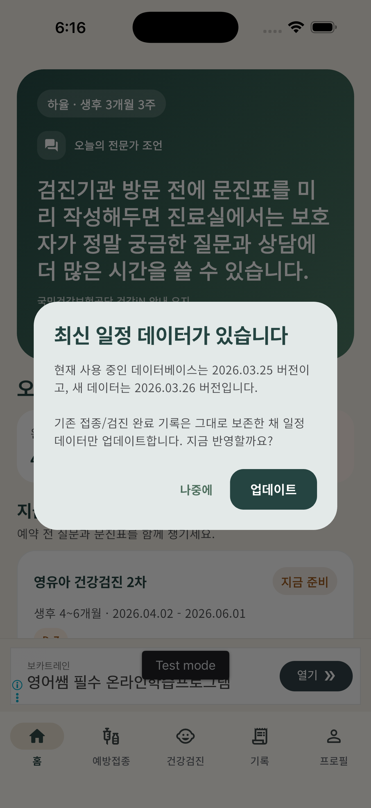
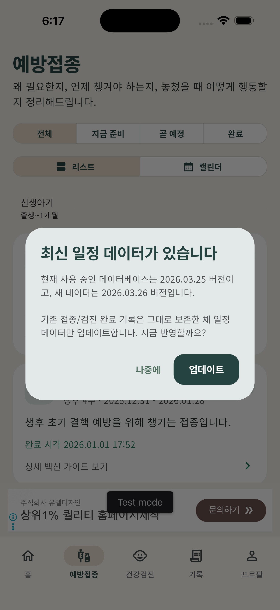
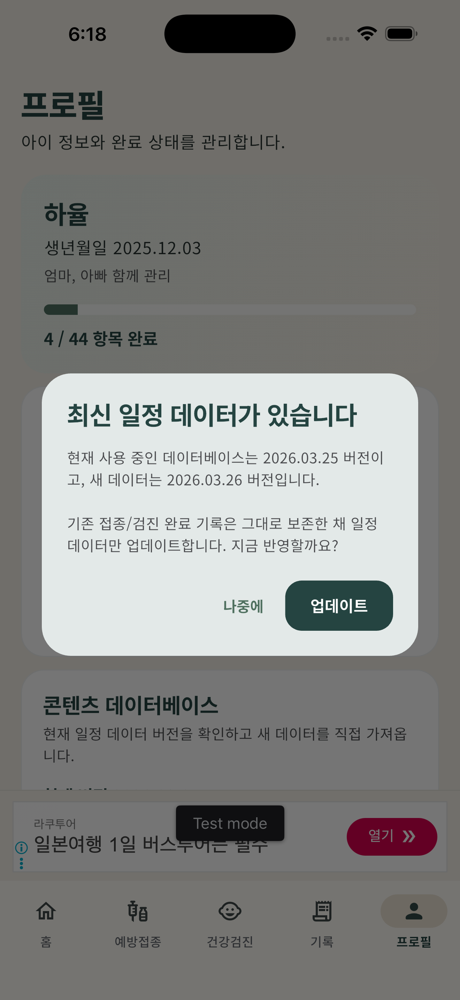

지금 준비할 일정과 앞으로 남은 일정을 직관적으로 확인
아이 생년월일만 입력하면
성인기까지 이어지는 예방접종과
영유아 검진 일정을 한 번에 정리합니다
아기 예방접종 알리미는 보호자가 “지금 무엇을 준비해야 하는지”를 바로 이해할 수 있도록 만든 일정 도우미입니다. 접종 시기, 검진 일정, D-day, 백신 설명, 준비사항, 공공서비스 연계까지 한 흐름으로 확인할 수 있습니다.
- 생년월일 기반 맞춤 일정
- 목록/캘린더 동시 지원
- 백신·검진 상세 정보
- 기기 알림과 D-day
- 원격 데이터베이스 업데이트
아이 맞춤 일정
출생일부터 성인기까지 이어서 관리



공공서비스와 함께 쓰는 앱
기록 확인은 공식 채널에서, 이해와 준비는 이 앱에서
영유아 건강검진과 예방접종을 한 흐름으로 정리
앱 실행 중 원격 JSON 기반 일정 업데이트 지원
핵심 기능
보호자가 실제로 자주 보게 되는 기능만 남겼습니다
단순한 일정표 앱이 아니라, 놓치지 않게 돕고 이해를 돕는 컴패니언 경험에 집중했습니다.
아이 맞춤 일정 계산
생년월일만 입력하면 신생아 시기부터 유아기, 취학 전, 청소년기, 성인기까지 이어지는 예방접종 흐름을 정리합니다.
목록과 캘린더를 함께
세부 항목은 목록으로, 큰 흐름은 캘린더로 확인할 수 있어 가까운 일정과 먼 미래 일정 모두 보기 쉽습니다.
D-day와 알림
지금 준비해야 할 일정은 D-day 기준으로 보여주고, 같은 시기 일정은 하나의 알림으로 묶어 더 깔끔하게 안내합니다.
백신별 자세한 설명
어떤 질환을 예방하는지, 왜 중요한지, 어떤 특성이 있는지 간단하고 이해하기 쉽게 정리했습니다.
검진·접종 전 준비사항
병원 방문 전에 무엇을 체크해야 하는지 빠르게 볼 수 있어, 보호자가 질문과 준비에 더 집중할 수 있습니다.
최신 일정 업데이트
앱에 하드코딩된 정보만 쓰지 않고, 원격 데이터베이스를 통해 일정 정보를 갱신할 수 있도록 설계했습니다.
화면 미리보기
하루 안에 여러 번 열게 되는 화면들
홈에서는 지금 해야 할 일을, 예방접종 화면에서는 전체 흐름을, 프로필에서는 알림과 데이터베이스 상태를 바로 확인할 수 있습니다.
홈 대시보드
오늘 기준으로 무엇을 준비할지 바로 확인
완료 항목, 지금 준비, 놓친 일정이 요약되고, 가장 가까운 일정이 카드 형태로 먼저 보입니다.
예방접종 캘린더
기간이 긴 접종도 흐름이 보이게
연령 구간과 기간 바가 함께 보여서, 접종이 어떻게 이어지는지 한눈에 파악할 수 있습니다.
프로필과 업데이트
알림과 데이터베이스 버전을 직접 관리
현재 사용 중인 데이터베이스 버전과 수동 업데이트 기능을 제공해, 최신 일정 반영 여부를 사용자가 직접 확인할 수 있습니다.
어떻게 쓰나요?
복잡한 설명 없이 세 단계면 충분합니다
아이 생년월일 입력
출생일 기준으로 예방접종과 검진 일정을 자동 계산합니다.
목록과 캘린더로 확인
가까운 일정은 목록으로, 전체 흐름은 캘린더로 살펴봅니다.
준비하고 기록하기
준비사항을 보고 완료 체크를 남기면 다음 일정이 다시 정리됩니다.
자주 묻는 질문
앱 소개 전에 많이 묻는 질문들
이 앱이 공식 예방접종 기록을 대신하나요?
아닙니다. 이 앱은 보호자의 이해와 준비를 돕는 보조 도구입니다. 실제 기록 확인과 대상 조회는 질병관리청, 국민건강보험공단 등 공식 채널을 함께 확인하는 것을 권장합니다.
유아기 이후 일정도 볼 수 있나요?
네. 유아기 일정뿐 아니라 취학 전, 청소년기, 성인기까지 이어지는 주요 접종 흐름을 함께 보여줍니다.
앱에 표시되는 일정은 업데이트할 수 있나요?
네. 앱은 원격 데이터베이스 기반 업데이트를 지원해, 새로운 일정 정보가 있을 때 반영할 수 있도록 설계되어 있습니다.